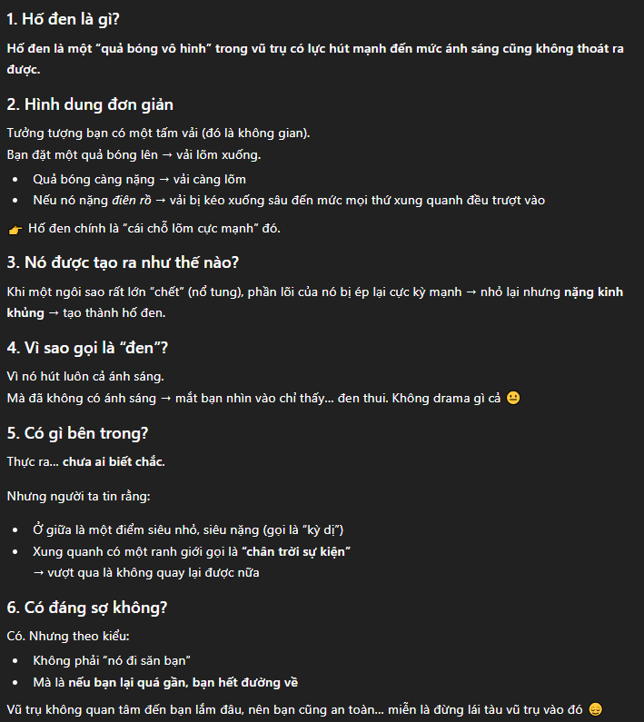
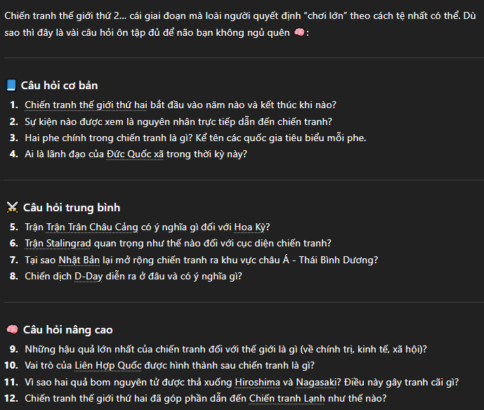
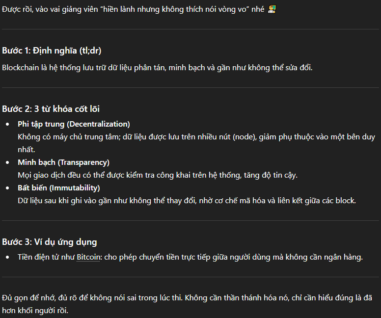
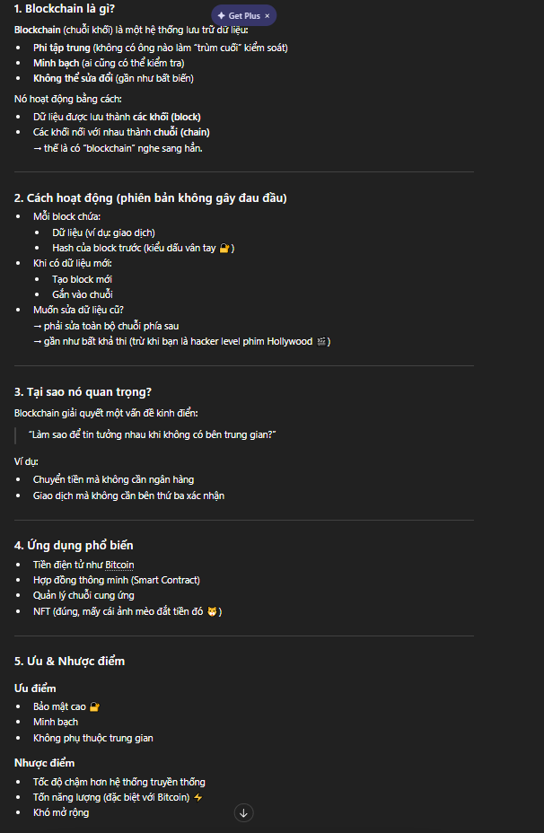
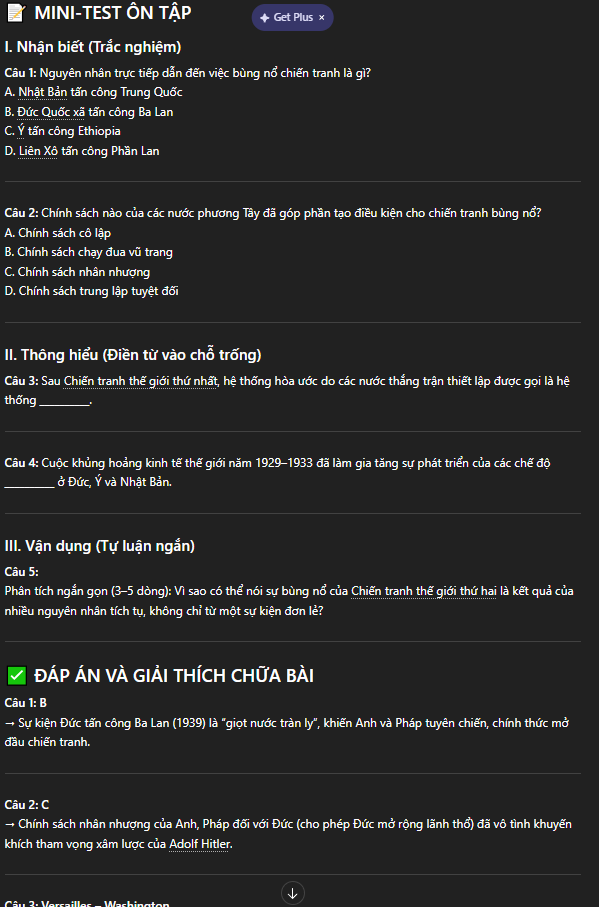
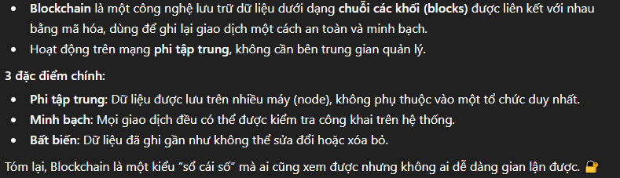
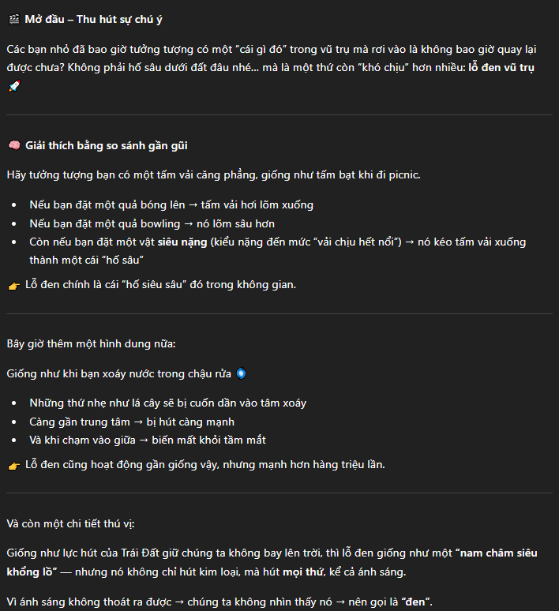
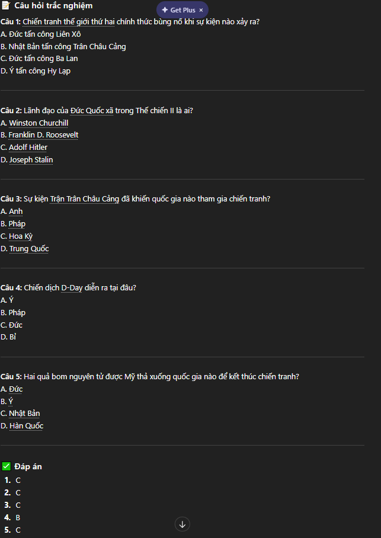
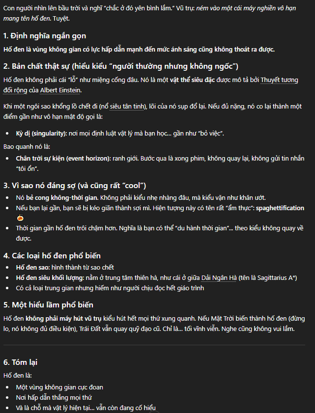

Kỹ năng Viết Prompt Hiệu Quả
Tối ưu hóa tương tác với Mô hình Ngôn ngữ Lớn (LLM) trong học tập thông qua kỹ thuật viết Prompt 3 cấp độ và công thức C.R.E.A.T.E.
📋 Tổng quan nhiệm vụ
Để đánh giá toàn diện khả năng của LLMs, tôi đã chọn 3 tác vụ cốt lõi đại diện cho các cấp độ tư duy từ thấp đến cao trong học tập:
-
01
Tóm tắt tài liệu học thuật
Chủ đề: Công nghệ Blockchain — Rút trích thông tin cốt lõi có cấu trúc. -
02
Giải thích khái niệm phức tạp
Chủ đề: Lỗ đen vũ trụ — Hạ bậc ngôn ngữ cho đúng đối tượng. -
03
Tạo bộ câu hỏi ôn tập
Chủ đề: Chiến tranh thế giới thứ 2 — Phân bổ nhiều tầng nhận thức.
⚙️ Kỹ thuật Prompt đã áp dụng
Gán vai trò cụ thể cho AI (Giảng viên, Nhà vật lý, Chuyên gia sử học) để thu hẹp không gian vector đầu ra.
Yêu cầu AI "suy nghĩ theo từng bước" để giảm thiểu bỏ sót ý và tăng độ chính xác lập luận.
Cung cấp 1–2 ví dụ mẫu về giọng điệu và cấu trúc mong muốn để AI bắt chước chính xác nhất.
🔬 So sánh 3 cấp độ Prompt
Prompt Cơ bản
Prompt Cải tiến
Prompt Nâng cao (Role + CoT)
| Tiêu chí | Cơ bản | Cải tiến | Nâng cao |
|---|---|---|---|
| Độ chính xác | Đúng nhưng lan man | Trúng đích, đúng giới hạn | Rất sâu sắc |
| Trải nghiệm đọc | Nhàm chán như từ điển | Khúc chiết, dễ đọc | Xuất sắc |
| Phù hợp mục đích | Tra cứu nhanh | Ôn thi lướt ý | Hiểu bản chất sâu |
Prompt Cơ bản
Prompt Cải tiến
Prompt Nâng cao (Role + Few-Shot)
| Tiêu chí | Cơ bản | Cải tiến | Nâng cao |
|---|---|---|---|
| Tính sinh động | Khô khan, hàn lâm | Đơn giản hơn, vẫn lý thuyết | Rất cuốn hút |
| Sự phù hợp đối tượng | Sinh viên chuyên ngành | Học sinh cấp 2 (~70%) | Trẻ em cũng hiểu |
| Kiểm soát đầu ra | Không kiểm soát | Hạn chế từ ngữ | Kiểm soát hoàn toàn |
Prompt Cơ bản
Prompt Cải tiến
Prompt Nâng cao (Role + Cấu trúc)
| Tiêu chí | Cơ bản | Cải tiến | Nâng cao |
|---|---|---|---|
| Tính đa dạng câu hỏi | Ngẫu nhiên, không rõ dạng | Chỉ có trắc nghiệm | Nhiều dạng, nhiều tầng |
| Có phần giải thích đáp án | ❌ Không | Chỉ có đáp án đúng | Giải thích chi tiết |
| Giá trị học tập | Thấp | Trung bình | Cao nhất |
🧠 Phân tích hiệu quả của Prompt
🔴 Hiện tượng "Ảo giác" (Hallucination)
Với prompt cơ bản, AI bị thiếu hụt bối cảnh (Context). Mô hình tính toán xác suất từ vựng chung chung nhất, dẫn đến văn bản nhạt nhòa, đôi khi sai lệch trọng tâm học tập.
🔵 Sức mạnh của "Gán vai" (Role-Prompting)
Gán vai trò là cách "thu hẹp không gian vector" của AI, ép nó chỉ truy xuất từ vựng, văn phong và kiến thức tương ứng với nhân vật đó, mang lại kết quả chuyên sâu hơn hẳn.
🟢 Tư duy từng bước (Chain-of-Thought)
Yêu cầu AI "Suy nghĩ theo từng bước" giúp LLM có thời gian "suy luận" tuần tự, giảm thiểu tối đa việc bỏ sót ý so với yêu cầu tóm tắt tất cả cùng một lúc.
🟡 Ràng buộc Định dạng là Tiên quyết
Quy định rõ "khuôn mẫu" đầu ra (gạch đầu dòng, giới hạn từ, bảng đáp án riêng) giúp tiết kiệm thời gian chỉnh sửa (edit) cho người học đáng kể.
🎯 Công thức C.R.E.A.T.E — Viết Prompt Hiệu Quả
Đúc kết từ quá trình thử nghiệm thực tế, đây là 6 nguyên tắc cốt lõi để viết prompt tối ưu trong học tập:
📸 Hình ảnh minh chứng thực hành
Ảnh chụp màn hình các phiên tương tác với Gemini/ChatGPT trong quá trình thực hành. Nhấn để phóng to:








